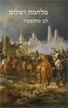

| שם הספר |
פוסטר הספר |
תיאור קצר |
| מאה שנים של בדידות |
|
מאה שנים של בדידות נחשב לרומן בסדר גודל של יצירת המופת הגדולה ביותר של מארקס, וזה כבר אומר הרבה. אחרי הכל, הוא זכה בפרס נובל. |
|
מובי דיק
|

|
הרומן הזה, מאת הרמן מלוויל, פורסם לראשונה בגרסה מצונזרת בשם "הלוויתן" ובהמשך קיבל את שמו המוכר "מובי דיק". |
|
בעקבות הזמן האבוד
|
|
הבחירה שלנו
לאף אחד, אפילו לא למחבר עצמו, היה שמץ של מושג מה יגרום החיפוש המייסר והממושך אחרי המשמעות של האומנות.
|
| דון קישוט |
|
מבחינה ספרותית, הספר דון קיחוטה מוכר בדרך כלל כרומן המודרני הראשון. |
| מלחמה ושלום |

|
מלחמה ושלום הוא אפוס עצום שמתרחש בתקופת מלחמת נפוליאון ברוסיה. הספר מציג את השקפתו של טולסטוי שהאמין שההיסטוריה היא תהליך בלתי נמנע שהאדם לא יכול להשפיע עליו. |